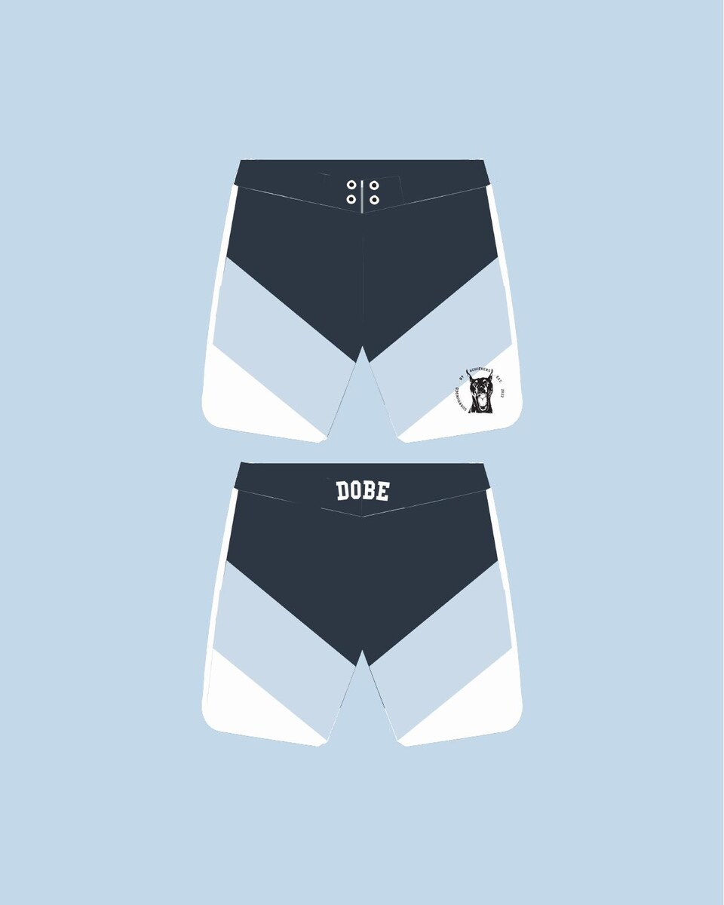
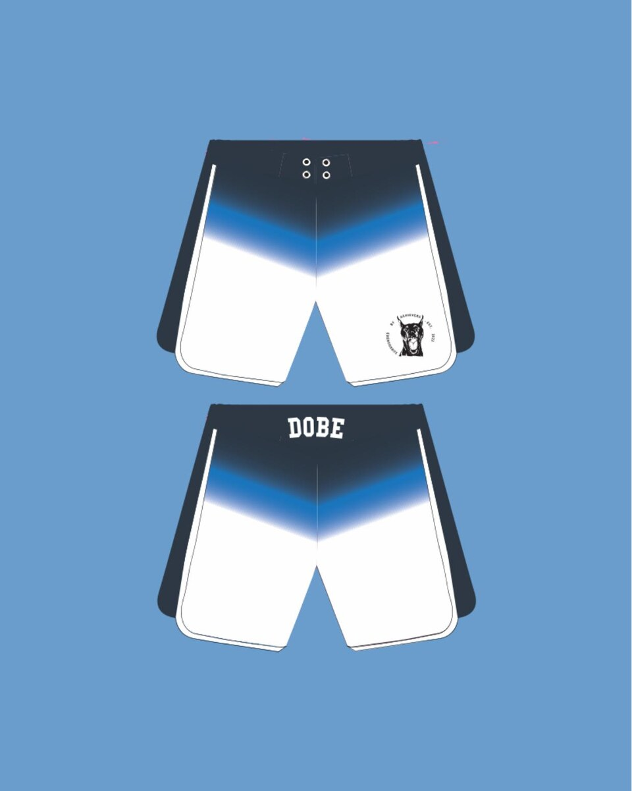
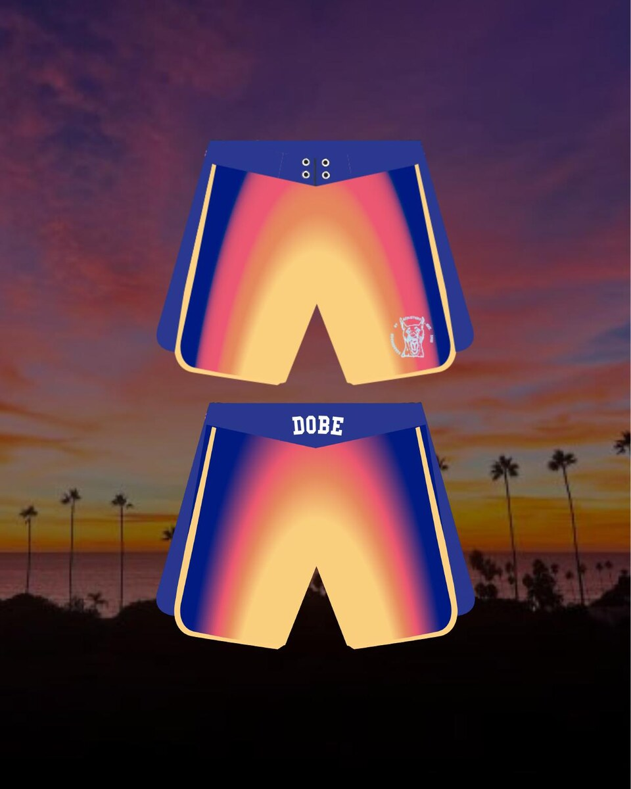
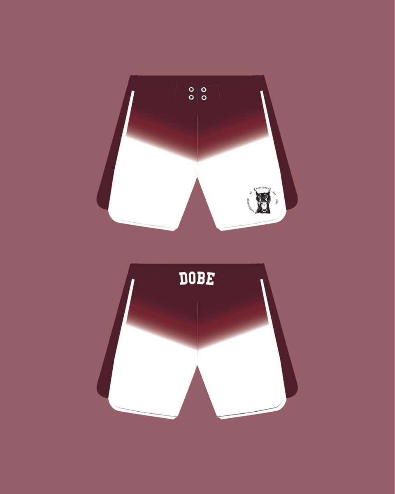
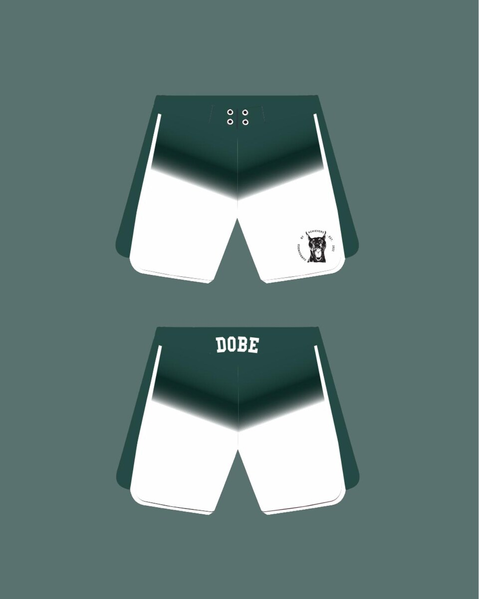

Diseño gráfico · Proyecto de producto
Color que
se mueve.
Una exploración de color, geometría y energía para una colección de bañadores de DOBe. Cinco direcciones construidas desde el mismo sistema visual.
Una idea,
cinco ritmos.
El color como identidad y la silueta como lienzo: propuestas pensadas para verse en movimiento.





Una prenda puede ser una identidad
en movimiento.